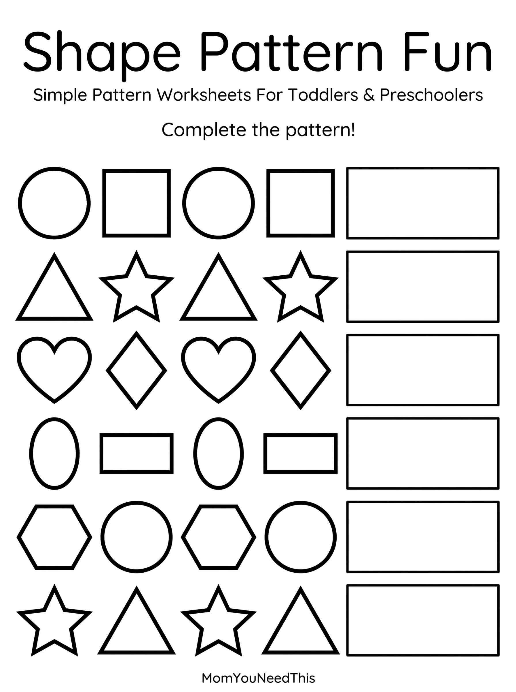

Shape Pattern AB Free Printable AB Shape Pattern Activity For Kids
This free printable shape pattern ab gives toddlers and preschoolers a fun, no-prep way to build early math and logic skills. Kids spot, continue, and create simple patterns.
🔷 Find The Pattern
Use the printable to help your child recognize repeating AB shape patterns, identify what comes next, and practice sequencing through a simple shape activity.
Free Shape Pattern AB Printable


How To Use This Printable
- Download and print the pattern pages.
- Say the pattern out loud together — “circle, square, circle, square…”
- Let your child finish the pattern by drawing, coloring, or circling what comes next.
- Make up new patterns together with crayons, stickers, or toys.
Why Learn Shape Patterns?
Recognizing patterns helps children develop early math, sequencing, logic, and problem-solving skills. Simple AB shape patterns give young children a fun introduction to understanding sequences and predicting what comes next.
🎁 Keep Exploring Free Learning Activities
Discover more printable activities, toddler resources, and learning ideas created for busy parents.
🎁 View All Free Resources❓ Shape Pattern AB FAQ
Is this shape pattern ab printable really free?
Yes — this shape pattern ab printable is 100% free to download and print at home. No signup and no payment needed. Just tap the download button and print as many copies as you like.
What ages is this printable best for?
It is made for toddlers and preschoolers. Little ones can enjoy it with a grown-up’s help, while older preschoolers can work on it more independently.
How do we work on patterns?
Say the pattern out loud together first, then let your child finish it. Clapping the rhythm of the pattern helps too.
🔗 More Free Printables You’ll Love
- Free Alphabet Coloring Pages Free printable alphabet coloring pages for little learners.
- Free Shape Pattern Activities Free printable shape pattern activities for little learners.
- Free Pattern Activity Pages Free printable pattern activity pages for little learners.
- Free Shape Coloring Pages Free printable shape coloring pages for little learners.